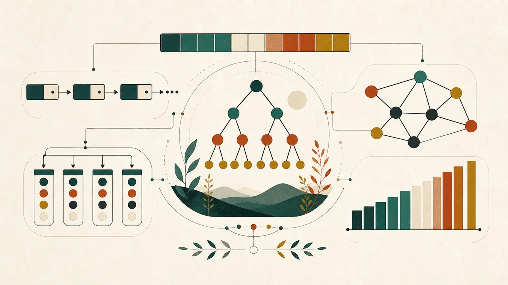
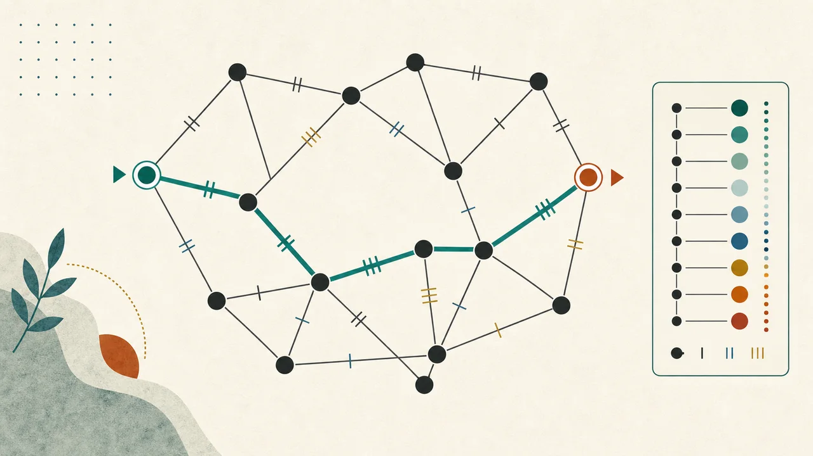
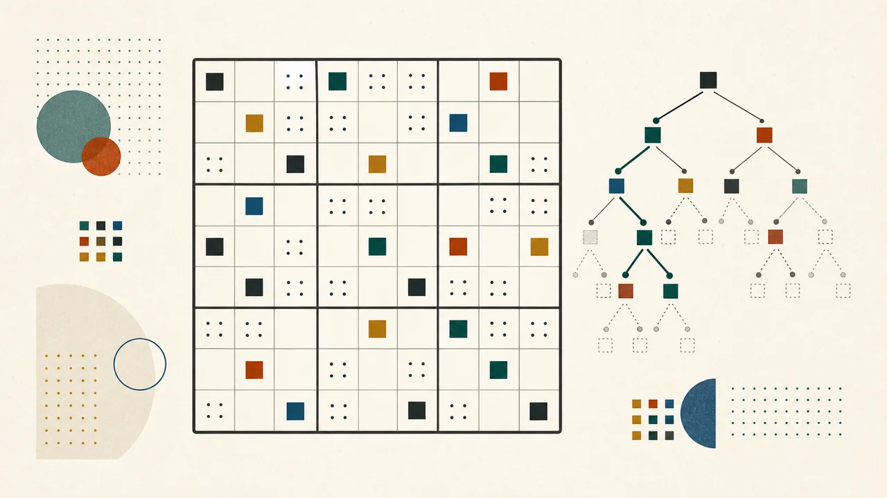

Adaptive assessment
Knowledge tracing, concept dependencies, and assessment systems that distinguish prediction from evidence about learning.
Computer scientist · developing AI researcher
My work connects artificial intelligence, educational technology, knowledge modeling, visualization, and applied software development—with an emphasis on tools people can question, explore, and understand.
Selected work
These projects are the clearest expression of my current direction: accurate algorithms, transparent internal state, and interfaces that support investigation.

Interactive tools for linear structures, trees, hashing, graphs, and sorting, organized around operations, invariants, and algorithm state.

A direct-manipulation graph editor for stepping through Dijkstra and Bellman–Ford with distance and predecessor updates.

A playable puzzle and inspectable solver using constraint propagation, minimum-remaining-values selection, and backtracking.
Research direction
My research interests center on representations of people, knowledge, time, and context—especially where model behavior must remain understandable to learners, researchers, and practitioners.
Knowledge tracing, concept dependencies, and assessment systems that distinguish prediction from evidence about learning.
Temporal and heterogeneous structures for representing relationships, histories, and changing user or learner state.
Visual and interactive systems that expose decisions, state transitions, tradeoffs, and failure conditions.
Approach
Separate working behavior from aspiration, test core logic directly, and document what a demonstration does not prove.
Model transitions deliberately, account for invalid inputs, and treat reset, cancellation, and recovery as first-class interactions.
Use precise language, accessible controls, and visual explanations that map back to the underlying representation.
Start a conversation
I welcome conversations about educational technology, AI research, applied software, and technical collaboration.
Contact Scott